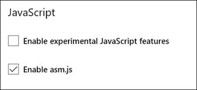

Asm.js is enabled by default in Microsoft Edge in the Windows 10 Insider Preview fast or slow rings.
On earlier releases of Microsoft Edge, you can enable asm.js for Microsoft Edge by navigating to about:config and selecting "Enable asm.js" in the JavaScript section.
Check support for other browsers on caniuse.com.
On this page, we match two chess engines against one another. They are identical in nearly every detail, including source code! The only difference is that one has a flag set to be interpreted as asm.js, a specialized and strict JavaScript subset that allows JavaScript engines to employ specialized compilation to dramatically speed up execution.
Each turn is limited to 200ms – because the asm.js-optimized engine has a significant performance advantage, it can evaluate more moves per turn and has a substantially higher likelihood of victory. You can adjust the turn length and other variables in the demo to see how they affect the outcome of the game.
Click the "Start a Match" button below to see how the asm.js optimized code performs better against non-optimized JavaScript.
Note: Advantage scoring is provided by the Stockfish Chess Engine in centipawns, a standard unit of measure for chess advantage that accounts for pieces on the board and their relative positions. Our winner prediction is then derived from the advantage score based on the fascinating correlation between the win percentage, pawn advantage, and the Elo rating.